Develop a new class Tree using Rectangle and Triangle classes. Develop a new class Picture containing House, Circle (sun) and Tree fields.
Create Tree class
We have seen that a tree object may be assembled from 3 triangles and a rectangle.
Let's now capture this behaviour in a class called Tree.
The advantage in doing so will become obvious when the class has been completed and its methods' behaviours demonstrated.
Open the shapes project in session03 folder.
Place the cursor in the IDE window, right click and select New Class (Figure 1).
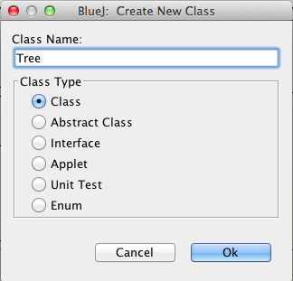
A class diagram (rectangle) representing the new Tree class should appear in the BlueJ IDE window (Figure 2).

Click on this Tree representation in the IDE, right click and open the editor.
This will launch the Tree class skeleton source code file (Figure 3).
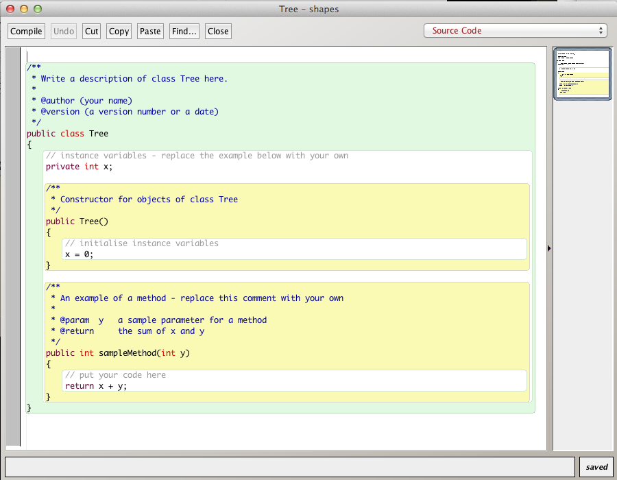
Delete all except the following so that we begin with just the outer class wrapper and a default constructor.
public class Tree
{
}Implementation of Tree class design
Continuing from the point where we have simply an outer wrapper class:
public class Tree
{
}Check that the above compiles.
The field set for the class comprises three Triangle objects and one Rectangle object.
The Rectangle object represents the trunk and the Triangle objects the remainder - the upper parts of the tree.
When the Tree class is instantiated we expect to see something like that illustrated in Figure 4 below.

Many different class design options are possible. Here is one approach:
Declare the private fields of the class.
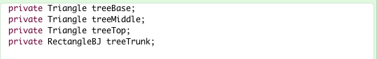
Add methods to the default constructor to create the various parts of the tree.
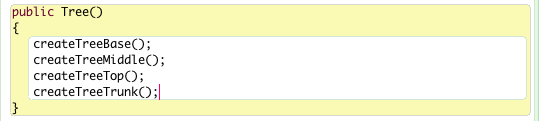
The three methods
public void createTreeBase()
public void createTreeMiddle()
public void createTreeTop()differ only in the values assigned to the local variables that are used to set the states of the three Triangle objects being created. See Figure 7.
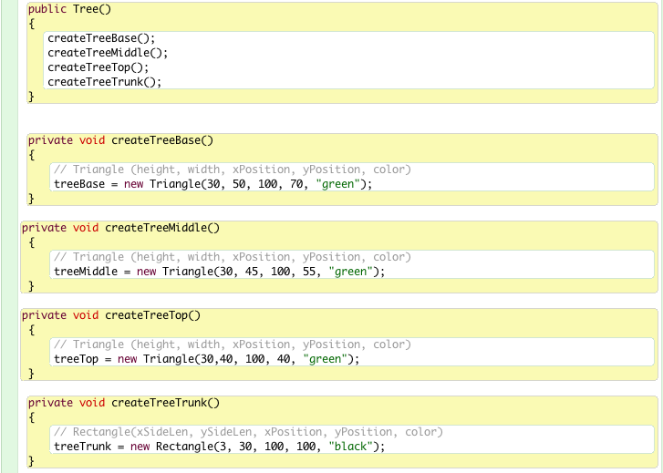
Make some sketches of the tree and note down key dimensions and coordinates so as to determine suitable attribute values to define the geometry of the various shapes.
For example, see Figure 8.
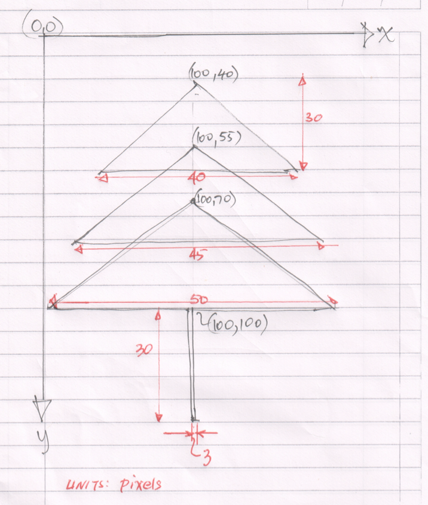
The method to create the tree trunk defines the attributes for a rectangle (Figure 9).
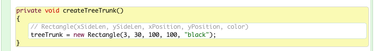
The various attribute values have been chosen such that the tree is located in an arbitrary position within the demo window.
When a tree object is required in a particular context it will be necessary to have a means of locating it precisely.
To achieve this we will write a moveTo method, the header of which is
public void moveTo(int x, int y)We will develop an algorithm to achieve this move in the next section.
Tree Class
Here is the source code of the Tree class developed to this point:
public class Tree
{
private Triangle treeBase;
private Triangle treeMiddle;
private Triangle treeTop;
private Rectangle treeTrunk;
public Tree()
{
createTreeBase();
createTreeMiddle();
createTreeTop();
createTreeTrunk();
}
public void createTreeBase()
{
// Triangle(height, width, xPosition, yPosition, color)
treeBase = new Triangle(30, 50, 100, 70, "green");
}
public void createTreeMiddle()
{
// Triangle(height, width, xPosition, yPosition, color)
treeMiddle = new Triangle(30, 45, 100, 55, "green")
}
public void createTreeTop()
{
// Triangle(height, width, xPosition, yPosition, color)
treeTop = new Triangle(30, 40, 100, 40, "green");
}
public void createTreeTrunk()
{
// Rectangle(xSideLen, ySideLen, xPosition, yPosition, color);
treeTrunk = new Rectangle(3, 30, 100, 100, "black");
}
}Developing a method to move a Tree object
The approach we will adopt is to
- define the coordinates of the tree trunk as (x,y)
- (x, y) refers to the top-left corner of the rectangle
- calculate the coordinate positions of the remaining objects relative to the tree trunk position.
- Implement a method moveTo(x, y)
- When invoked all Tree components will remain in the same relative locations
- The entire tree will move as a single unit without any separation of components
- When invoked all Tree components will remain in the same relative locations
The method is illustrated in Figure 1. The delta symbols refer to the triangles.
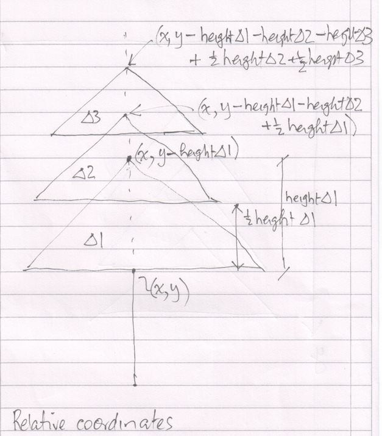
Before we implement moveTo in the Tree class we will introduce an accessor for the height field in Triangle. See Figure 2.
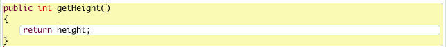
The completed moveTo method is shown in Figure 3.
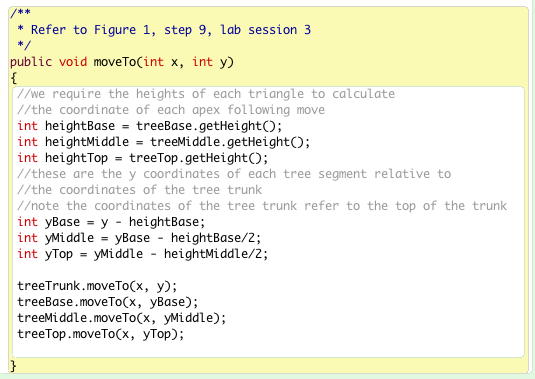
Fully implement this method in the Tree source code, compile and test.
Figure 4 shows two tree objects. The top left is the default and the other where the moveTo method has been invoked with parameters (x,y)==(250,250). Attempt to replicate this.
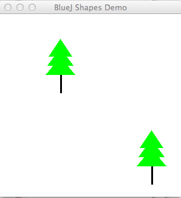
Here is the completed (but undocmented)source code for Tree class:
public class Tree
{
private Triangle treeBase;
private Triangle treeMiddle;
private Triangle treeTop;
private Rectangle treeTrunk;
public Tree()
{
createTreeBase();
createTreeMiddle();
createTreeTop();
createTreeTrunk();
}
private void createTreeBase()
{
// Triangle (height, width, xPosition, yPosition, color)
treeBase = new Triangle(30, 50, 100, 70, "green");
}
private void createTreeMiddle()
{
// Triangle (height, width, xPosition, yPosition, color)
treeMiddle = new Triangle(30, 45, 100, 55, "green");
}
private void createTreeTop()
{
// Triangle (height, width, xPosition, yPosition, color)
treeTop = new Triangle(30,40, 100, 40, "green");
}
private void createTreeTrunk()
{
// Rectangle(xSideLen, ySideLen, xPosition, yPosition, color)
treeTrunk = new Rectangle(3, 30, 100, 100, "black");
}
public void display(boolean show)
{
if(show)
{
treeBase.makeVisible();
treeMiddle.makeVisible();
treeTop.makeVisible();
treeTrunk.makeVisible();
}
else
{
treeBase.makeInvisible();
treeMiddle.makeInvisible();
treeTop.makeInvisible();
treeTrunk.makeInvisible();
}
}
/**
* Moves tree as a unit
* @param x The destination x coordinate
* @param y The destination y coordinate
*/
public void moveTo(int x, int y)
{
//we require the heights of each triangle to calculate
//the coordinate of each apex following move
int heightBase = treeBase.getHeight();
int heightMiddle = treeMiddle.getHeight();
int heightTop = treeTop.getHeight();
//these are the y coordinates of each tree segment relative to
//the coordinates of the tree trunk
//note the coordinates of the tree trunk refer to the top of the trunk
int yBase = y - heightBase;
int yMiddle = yBase - heightBase/2;
int yTop = yMiddle - heightMiddle/2;
treeTrunk.moveTo(x, y);
treeBase.moveTo(x, yBase);
treeMiddle.moveTo(x, yMiddle);
treeTop.moveTo(x, yTop);
}
}Exercises
Exercise 1
- Fully comment the Rectangle class.
- Generate documentation using the BlueJ Project Documentation menu option.
- Refer to the Oracle online document How to Write Doc Comments for the Javadoc Tool in writing comments.
Exercise 2 (Advanced)
Create a Picture class
This class will facilitate rendering of the house, sun and tree objects that were manually assembled into a picture in the earlier sections of the session.
The class to contain these fields:
- House
- Sun
- Tree
Exercise 3 (Advanced)
Refactor the House class as follows:
- Add a method with this header:
- public void moveTo(int x, int y)
- where (x,y) is the coordinate pair in pixels of the destinatio and is the apex of the roof, i.e. the highest point or ridge.
- Fully implement this method and check it works correctly.
- Here is key information regarding the BlueJ demo window
- Size: 300 x 300 pixels,
- Axes directions:
- x axis direction is to the right
- y axis direction is vertically down
- origin (0, 0) is at the top-left corner of the window.